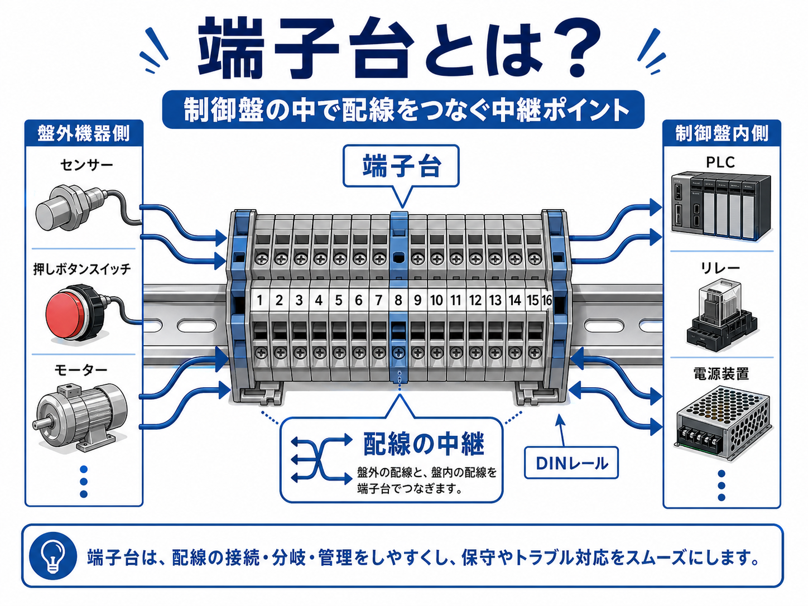
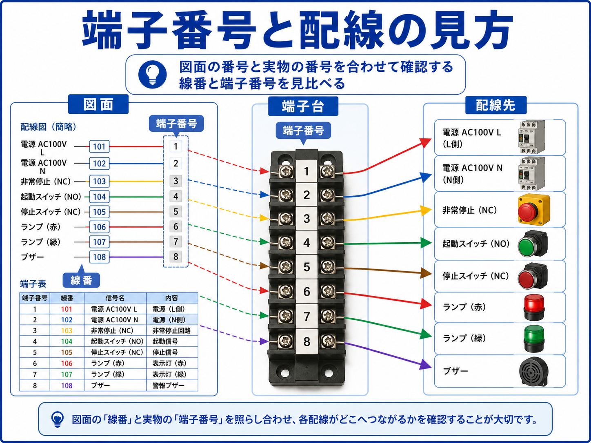
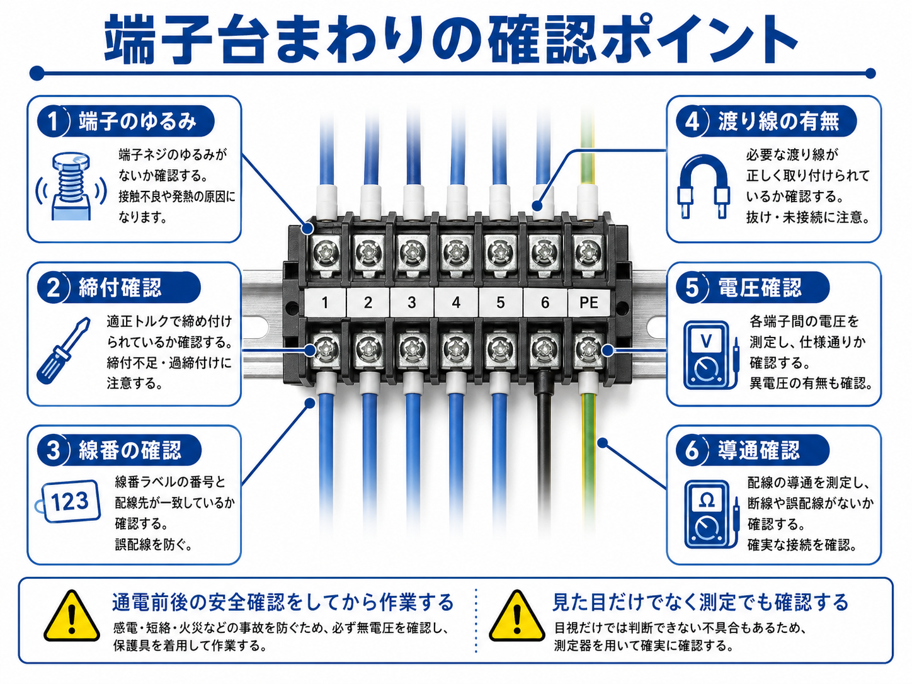

向いている人
- 制御盤の端子台の役割を知りたい人
- 図面の端子番号と実物の見方を整理したい人
- 配線確認やトラブル対応の入口を作りたい人
端子台は、制御盤の中で配線を接続・分岐・整理するための部品です。 盤外のセンサー、押しボタン、モーター、表示灯などから来る配線を、盤内のPLC、リレー、電源装置などへつなぐ中継ポイントになります。
現場で配線を追うときは、いきなり機器だけを見るのではなく、端子台の番号や線番を見ながら追うと分かりやすいです。 図面と実物をつなぐ場所として、端子台はかなり重要です。
図面に書かれた端子番号と、実際の端子台番号を照らし合わせることで、 どの配線がどこへ行っているかを追いやすくなります。

先輩端子台は、制御盤の中で配線を受けたり、外の機器へつないだりする中継場所だね。

新人端子番号が並んでいるところですね。配線が多くて、どこから見ればいいか迷うことがあります。
先輩そういう時こそ、図面の端子番号と実物の番号を合わせて見るといいよ。配線の道筋がかなり追いやすくなる。
端子台とは、電線を接続するための端子が並んだ部品です。 制御盤では、盤外から入ってくる配線と、盤内の機器へ向かう配線を整理して接続するために使われます。
端子台があることで、配線を1か所で整理でき、図面との照合、メンテナンス、交換、増設、トラブル対応がしやすくなります。 盤内の「配線の要」と考えると分かりやすいです。

盤外機器から来た配線を、盤内のPLC・リレー・電源などへつなぎます。
端子番号や線番を使うことで、配線の行き先を整理しやすくします。
電圧測定、導通確認、配線確認の入口として使いやすい場所になります。
機器交換や改造時に、配線の切り分けや再接続がしやすくなります。
端子台がきれいに整理されていると、後から見た人でも配線を追いやすくなります。 逆に線番がない、番号が合っていない、渡り線が分かりにくい場合は、トラブル時に時間がかかりやすくなります。
端子台を見るときは、端子番号と線番をセットで確認します。 図面に書かれている端子番号と、実物の端子台に付いている番号を照らし合わせることで、配線の行き先を追いやすくなります。

| 見るもの | 意味 | 現場での見方 |
|---|---|---|
| 端子番号 | 端子台の場所を示す番号 | 図面の番号と実物の番号を照らし合わせます。 |
| 線番 | 電線ごとに付ける識別番号 | 同じ線番が図面や機器側にも出てくるか確認します。 |
| 配線先 | その線がどの機器へ行くか | PLC入力、リレー、電源、押しボタン、表示灯などを確認します。 |
| 渡り線 | 端子同士をつなぐ短い配線 | 電源や共通線を分岐している場合があるため、外れやゆるみに注意します。 |
端子番号が合っていても、線番や配線先が違うと誤配線につながります。 図面、端子番号、線番、実物の配線をセットで確認するのが安全です。
端子台まわりの配線を追うときは、いきなり全体を見るより、信号ごとに分けて見ると追いやすいです。 たとえば、押しボタンの入力、表示灯の出力、電源のプラス・マイナスなどを、1本ずつ確認していきます。
まず図面上で、見たい信号がどの端子番号に出ているか確認します。
盤内の端子台で、同じ端子番号の場所を探します。
端子に入っている電線の線番が、図面や行き先と合っているか確認します。
必要に応じてテスターで電圧や導通を確認し、信号が来ているかを見ます。
目で見て何となく追うよりも、端子番号と線番を頼りにした方が確実です。 線が多い盤ほど、番号で追う考え方が大切になります。
端子台まわりは、接触不良、端子ゆるみ、線番違い、渡り線外れ、誤配線などが起きやすい場所です。 トラブル時だけでなく、点検時にも見ておくと安心です。

端子ねじのゆるみは、接触不良や発熱の原因になります。点検時に確認します。
線番が図面と合っているか、消えていないか、見える向きかを確認します。
共通電源や信号を渡している線が、外れていないか、入れ間違いがないか確認します。
端子間に必要な電圧が来ているか確認します。測定前後の安全確認も必要です。
電源を切った状態で、配線がつながっているか、断線していないかを確認します。
発熱や接触不良があると、端子や電線の被覆が変色していることがあります。
端子台まわりのトラブルでは、「信号が入らない」「ランプが点かない」「センサーが反応しない」「電源が来ていない」といった症状が出ます。 そのときは、端子台を境目にして、盤外側と盤内側を分けて見ると原因を切り分けやすいです。
| 症状 | 見る場所 | 確認の考え方 |
|---|---|---|
| 押しボタンが効かない | 押しボタン側配線・端子台・PLC入力 | ボタン接点、端子台の電圧、PLC入力ランプを順番に確認します。 |
| 表示灯が点かない | 出力側配線・端子台・表示灯本体 | 出力が出ているか、端子に電圧が来ているか、ランプ本体が正常かを見ます。 |
| センサー信号が来ない | センサー電源・信号線・端子台・PLC入力 | 電源線、0V、信号線を分けて確認します。 |
| 電源が不安定 | 電源端子・共通端子・渡り線 | 端子ゆるみ、渡り線外れ、電圧降下を確認します。 |
先輩配線が多い時は、端子台を境目にして盤外側と盤内側を分けると、原因を順番に切り分けやすくなるよ。
新人なるほど、先に区切って見れば、どこから確認するか迷いにくくなりますね。
端子台は電源や信号が集まる場所なので、確認や増し締めをする時は安全確認が大切です。 電源が入った状態で測定する場合と、電源を切って導通確認する場合を分けて考えます。
通電中に端子台へ触れると、感電や短絡の危険があります。 測定する時は、測定レンジ、テスター棒の当て方、周囲の導電部、保護具を確認してから作業します。
| 作業 | 注意点 |
|---|---|
| 増し締め | 電源を切れる場合は切ってから行い、締めすぎにも注意します。 |
| 電圧測定 | 通電状態で行うため、短絡や感電に注意して測定します。 |
| 導通確認 | 基本的に電源を切った状態で行い、残電圧がないか確認します。 |
| 配線変更 | 元の線番、端子番号、写真、図面を確認してから変更します。 |
配線変更や交換をする前に、端子台まわりの写真を撮っておくと、元の状態を確認しやすくなります。 線番が見える角度で撮っておくと、復旧時の助けになります。
端子台は、制御盤の中で配線を接続・分岐・整理するための部品です。 盤外機器と盤内機器をつなぐ中継ポイントとして、配線確認やトラブル対応で重要になります。
図面の端子番号、実物の端子台番号、線番、配線先を照らし合わせて見ることで、どの配線がどこへ行っているかを追いやすくなります。 端子番号だけでなく、線番や渡り線も一緒に見るのがポイントです。
トラブル時は、端子台を境目にして盤外側と盤内側を分けて確認すると、原因を切り分けやすくなります。 端子ゆるみ、電圧、導通、配線先を順番に見ることで、落ち着いて確認できます。